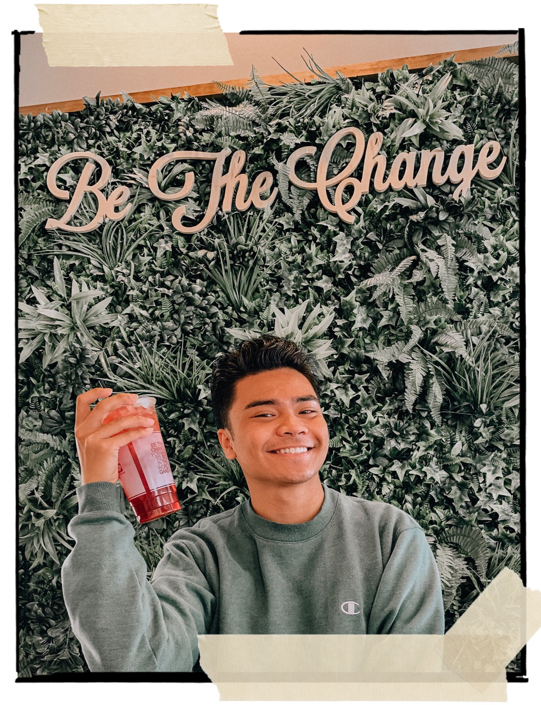
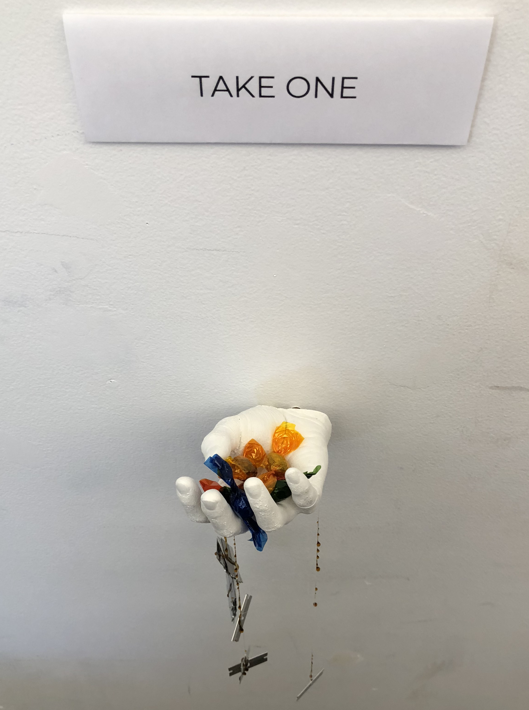
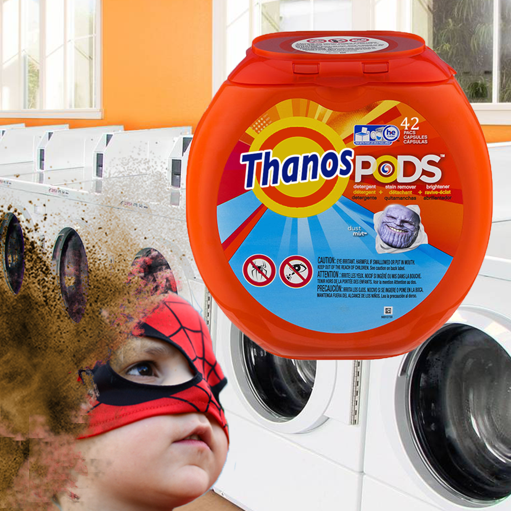
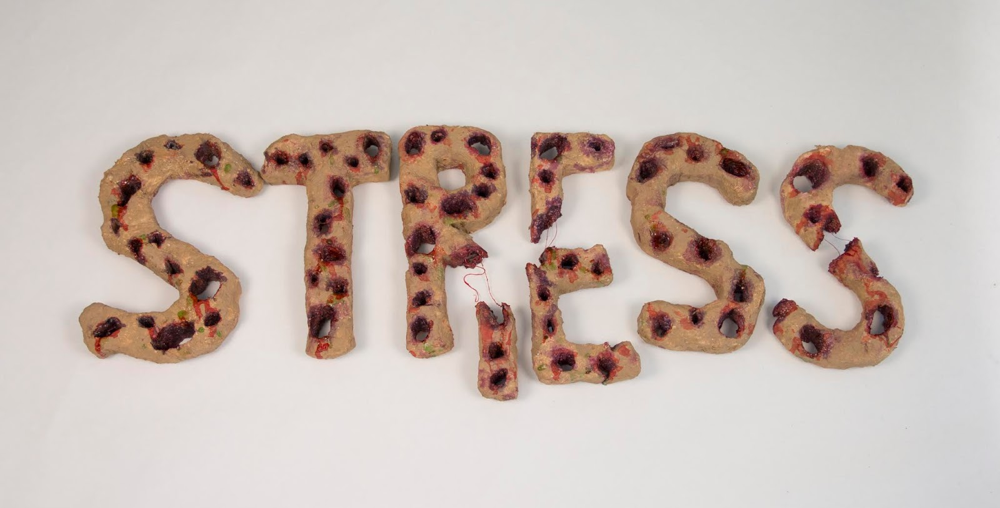
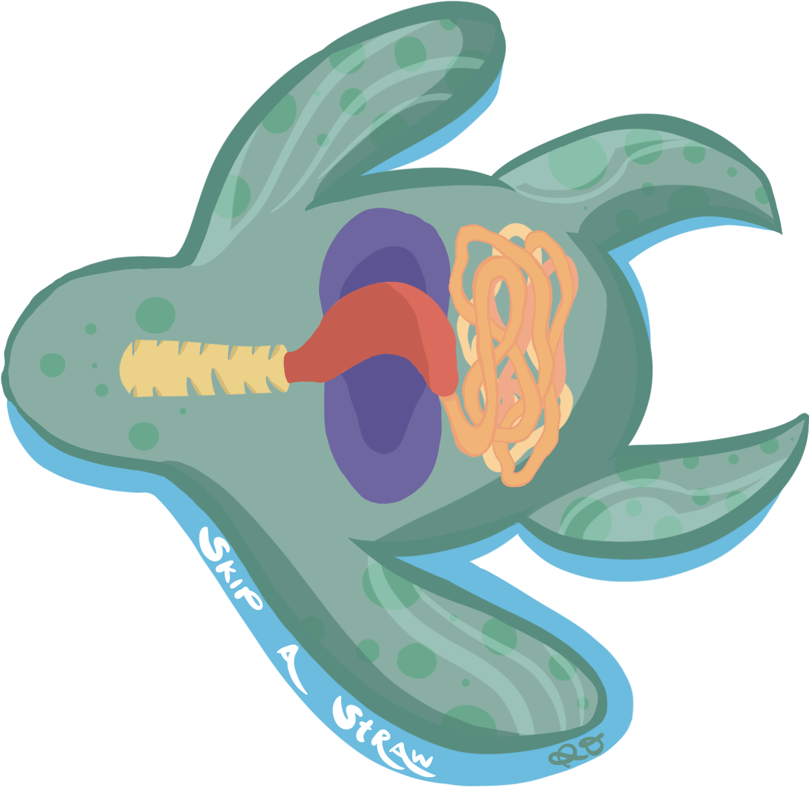

artist statement

Part of who I am as an artist is someone who gets inspiration from other artists who I look up to. I like to express my creativity in two ways. One is through tradional art and that consists of sketching, drawing, painting, DIYs, and sculpting. The second is through digitally where I mostly enjoy that consists of editing raw photos, making collages, working with glitches, web design, editing videos, digital drawings, and so much more! I like to think of my art as a way to ease my mind, more so, creating my own world. Creating my on world through expressing my art interactively. Interactive art is what I want to mainly focus for my future art projects, but for now, I am excited to learn what I can do with my skills and really challenge myself to become a successful artist.
portfolio
 The class project that was given to us was to create an artwork that responds to a statistic or to create a prop. This statistical project was a comment on how halloween is not really much celebrated in America anymore because the world has changed to where people can't trust other people. I had to think outside the box for this and created a replica of my hand by casting, using plaster and alginate. Second, I incorporated found objects, such as strings, blades, and honey. Lastly, by using warhead candies, I wrapped it with colored cellophane.
Meaning: The white plaster represents innocence, while the strings with honey covered blade represents the sweetness oozing down from the danger. The candy, already looks suspicious because of how it is packaged (wrapped in cellophane), and once people eat it they will get a taste of sourness.
 This was my final project in my 2D Design and Concepts class. The class had to paint a real life cake that our professor baked herself. She was also kind enough to let us take some home and eat. The goal for this project was to paint whatever color you see on the cake.
This was my final project in my 2D Design and Concepts class. The class had to paint a real life cake that our professor baked herself. She was also kind enough to let us take some home and eat. The goal for this project was to paint whatever color you see on the cake.
 This was my final project in my Digital Media Art class where I chose to make net art about myself. With hyperlinked images and text, the website takes you to a whole new level of interactive play. The site reminds me of a sense of continuity, it takes you to different pages with different images, videos, or gifs that shows who I am as aperson. In making this, I used HTML coding in Dreamweaver, as well as using Cyberduck.
This was my final project in my Digital Media Art class where I chose to make net art about myself. With hyperlinked images and text, the website takes you to a whole new level of interactive play. The site reminds me of a sense of continuity, it takes you to different pages with different images, videos, or gifs that shows who I am as aperson. In making this, I used HTML coding in Dreamweaver, as well as using Cyberduck.
 This was an experimentation of value and shadows, using sketch lines with graphite pencil. The goal for this was to familarize myself with the lights and shadows that are reflecting on the egg, as well as the fabric and the fold of it.
This was an experimentation of value and shadows, using sketch lines with graphite pencil. The goal for this was to familarize myself with the lights and shadows that are reflecting on the egg, as well as the fabric and the fold of it.
This was a video project that consists with loops that are different from each other. A loop that has me jogging to the right, a car loop that is going to the left and transforming into dinasours that are runninn. I used Adobe Premiere to edit this video.
 This was my final meme mashup for my Digital Media Art project. The goal for this project was to familiarize myself with Adobe Photoshot. For my memes, I combined the Thanos edits and tid pods because those two are hilarious to me. I photoshopped thanos's face to make it look like an advertisement of a thanos tide pod. Once you eat it, you will turn to dust, just like the spider kid on the left. Get it?
 For this project, I had to come up with any word and make a 3D font out of it. The class had to built a sculptural font that expresses the word (texture, smell, shape) and make the aduience feel like the word is alive. So, I chose the word "stress" because it is very relatable to many people and plus, I myself was going through it. The materials that I used for this project were: styro foam, toilet paper, elmer's glue, paint, and slime.

This was an activist project to make an awareness of skipping a straw. For this project I made my own sticker turtles with its digestive organs visible. I went to three boba stores and stick them on the plastic straws. My audience are the people that go to bobs stores and get plastic straws. A lot of turtles have been eating and dying from wastes, especially plastics that are floating in the ocean.